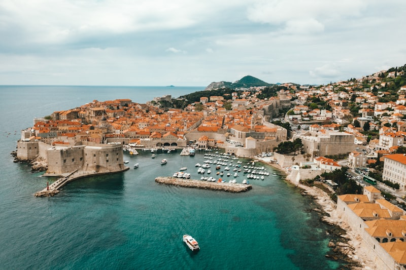

Grèce — Ithaque, l'île d'Ulysse


On y est. Ithaque. L'île d'Ulysse, celle dont il rêvait pendant 10 ans d'errance en mer. Et on comprend pourquoi.
C'est une île modeste, sans la flamboyance de Santorin ou le tourisme de Corfou. Mais elle a une âme. Les collines de cyprès qui plongent dans des criques turquoise, les petits villages de pêcheurs, le silence.
On a mouillé dans la baie de Vathi, le port principal. 5 euros la nuit au mouillage municipal, eau et électricité incluses. On est restés 3 jours.
Rencontre marquante : un vieux pêcheur du nom de Spiros qui nous a invités à boire un café chez lui. Il nous a raconté que son grand-père construisait des caïques (bateaux traditionnels) à la main. Il a 78 ans et pêche encore tous les matins à 5h.
C'est ça le vrai voyage — pas les miles, pas les mouillages de rêve, mais les gens.